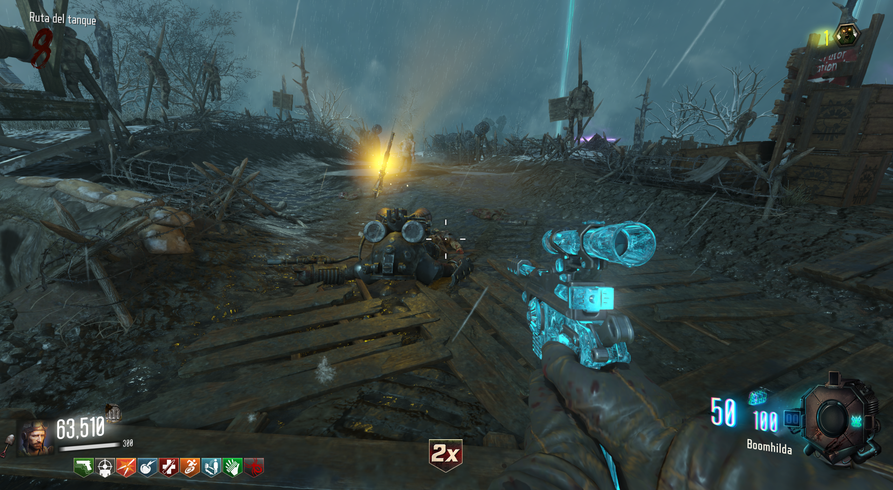
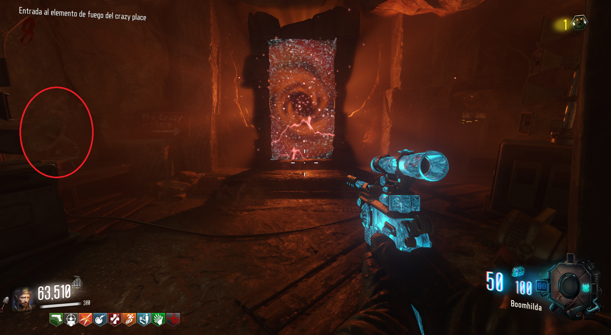

Para conseguir el bastón de fuego, debermos de conseguir sus tres piezas.
Primera pieza:
Buscaremos un avion en el cielo con una luz amarilla y le dispararemos.
La pieza caerá desde el cielo y la podremos obtener.
Segunda pieza:
Para la siguiente pieza, solo deberemos de darle energía al generador 6, que esta cerca de la iglesia. La pieza aparecerá en la caja.
Tercera pieza:
Tendremos que esperar a que aparezca un Panzer y matarlo. El primero aparece en la ronda 8.
Muerto el panzer, nos dará la pieza.

Cuando tengamos las tres piezas, iremos con el gramófono (se encuentra en la zona de excavación), a la mina de fuego cerca del Laboratorio(Spawn).
Bajaremos por la mina y colocaremos el gramófono para que el portal aparezca.

Después iremos a nuestro pedestal correspondiente y obtendremos la piedra de fuego.
Finalmente iremos a la zona de excavación y construiremos el bastón.